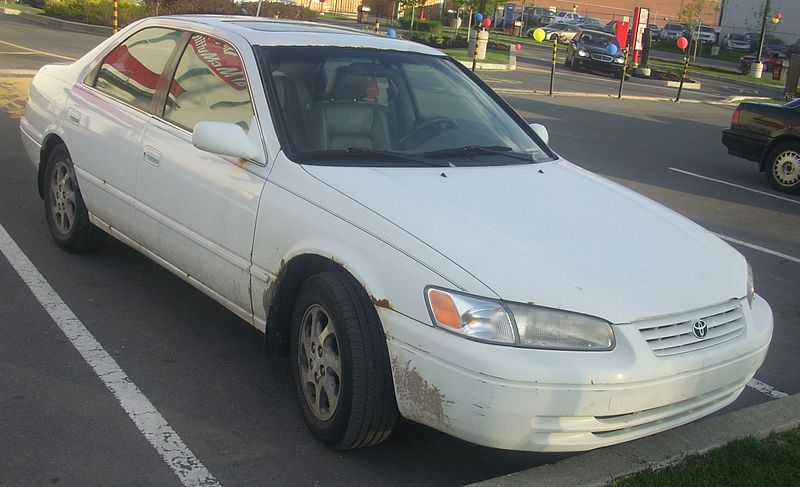

1 / 5

1985 Volkswagen Cabriolet. I bought this car as a project, so my take is that it is a good car, but don't have much useable info on this car.
2 / 5

1974 Volkswagen beetle. This car is in bad shape. I bought this as a project for my son and I to go through together. Lots of rust and engine needs rebuilt. We will see how this goes, check back for updates on this project car.
3 / 5
1987 Pontiac Grand Am. This beast was MY first car. I drove this until the wheels fell off. It lasted me 3 years or so as a delivery car and just general beating around in with little maintenance.
4 / 5
This was my first car that I bought myself. It was a 1998 Volkswagen Jetta GT. It had the 2.0 four cylander, manual trans, and took a hell of a beating from me over the years. This car started my love for Vw's.
5 / 5
Info about the Jetta GLX.
5 / 5
1985 Vw Golf GTI. I bought this car as another project. It had an engine swap of a g60 motor, but the supercharger was bad and I planned on rebuilding it. It ended up catching fire by the fusebox while I was driving.
5 / 5
Info about 2001 Audi Allroad.
5 / 5

Info about the Toyota Camry.
5 / 5
Info about the 72 Impalla.
❮
❯
A glimpse into the sparatic mind of Shawn
Family
I am married to a lovely woman named Christina Black. We have 4 wonderful
childern. We have been married for 5 years, and been a couple for 13 years.
We have quite a few pets. Some of our pets even have their own social media
accounts. You can see more about our pets here.
Our dogs names are Winston and Violet, and the cats are Floofy and Psycho.
List of skills and tallents
I can't think of anything more rewarding than being able to express
yourself to others through painting. Almost everything is going to
happen for you automatically - you don't have to spend any time
working or worrying. Water's like me. It's laaazy ... Boy, it always
looks for the easiest way to do things I started painting as a hobby
when I was little. I didn't know I had any talent. I believe talent is
just a pursued interest. Anybody can do what I do. We must be quiet,
soft and gentle.
We'll play with clouds today. Here's another little happy bush Do an
almighty painting with us. When you buy that first tube of paint it
gives you an artist license. Now we can begin working on lots of happy
little things.

This is my chicken coop project that I built on the back of my shed. It was an interesting project to do and if you'd like more info please click on the picture.

This is my bedroom project. I converted a garage on my house into an extra bedroom. For more infor on the project along with more pictures, click on the picture above.
This was a Panasonic TuffBook that I recieved as payment. It didn't work when I first recieved, after adding a hard drive and some RAM I had a working computer. Then I decided to paint and design it.
I decided to convert a 10 by 10 concrete slab into a new shed for my backyard. This was a fun project, even though I made the roof a little too steep.
This gallery has pictures of a table I refinished for my wife. It originally had a forest green legs and backs (for the chairs). I changed the accent color to a coffee brown.